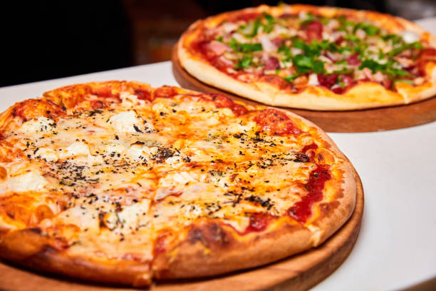

Making a classic homemade pizza from scratch involves creating a leavened yeast dough, a savory tomato sauce, and layering it with melted cheese and toppings. The final masterpiece is baked at a very high temperature to achieve a crispy crust and bubbly, golden cheese.
To make a classic homemade pizza, you will need ingredients for three main components: the dough, the sauce, and the toppings.
Pour warm water ( 110°C / 43°C ) into a large bowl. Sprinkle in the sugar and dry yeast. Let it rest for 10 minutes until it becomes foamy. This process proves the yeast is alive and active
Add flour, olive oil, and salt to the yeast mixture. Stir until a sticky ball forms. Turn it out onto a floured surface. Knead for 5 minutes until smooth and elastic.
Coat a clean bowl with a drizzle of olive oil. Place the dough inside and turn it over to coat it with oil. Cover the bowl with a damp cloth or plastic wrap. Leave it in a warm room for 1 hour until it doubles in size
Preheat your oven to its highest setting, ideally 475°F/245°C or 500°F/260°C. Punch down the risen dough to release trapped gas bubbles. Divide it into two portions. Use your hands or a rolling pin to stretch each portion into a 10 to 12-inch circle. Leave the outer rim slightly thicker to form the crust. Transfer the shaped crust to a baking sheet or pizza pan dusted with cornmeal.
Brush the surface lightly with olive oil to prevent the crust from getting soggy. Spread a thin layer of tomato sauce evenly, leaving a half-inch border around the edge. Sprinkle a generous layer of shredded mozzarella cheese. Add your desired toppings evenly across the top.
Slide the pizza into the hot oven. Bake for 12 to 15 minutes. The pizza is ready when the crust turns golden-brown and the cheese is completely melted and bubbly. Let it cool for a few minutes, slice it, and serve hot.